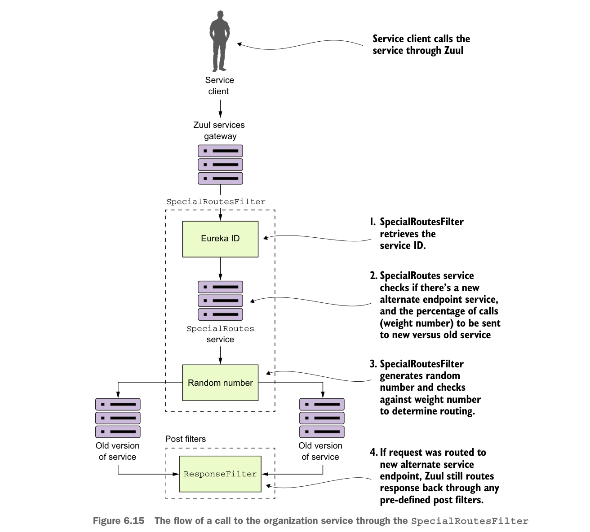

gọi tới một microservice khác có tên SpecialRoutes. Dịch vụ SpecialRoutes sẽ kiểm tra cơ sở dữ liệu nội bộ để xem tên dịch vụ có tồn tại hay không. Nếu tên dịch vụ đích tồn tại, nó sẽ trả về một trọng số và đích đến mục tiêu của một vị trí thay thế cho dịch vụ. SpecialRoutesFilter sau đó sẽ lấy trọng số được trả về và, dựa trên trọng số đó, ngẫu nhiên tạo một số sẽ được dùng để xác định xem lời gọi của người dùng sẽ được định tuyến tới organization service thay thế hay tới organization service được định nghĩa trong các ánh xạ route Zuul. Hình 6.15 cho thấy luồng xử lý khi SpecialRoutesFilter được sử dụng.

Luồng xử lý một lời gọi tới organization service qua SpecialRoutesFilter